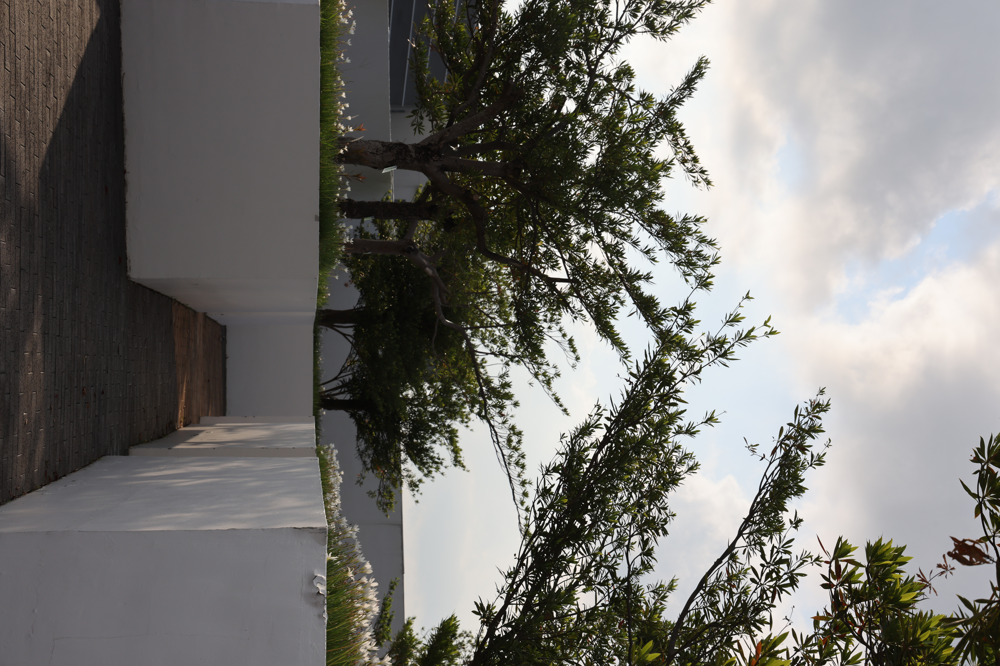

Nature & Light / 自然與光
Framing nature through light and foliage.
以光線與枝葉構成自然框景。
2026年11月16日
Exploring spaces, light and everyday moments through photography and moving image.
透過攝影與動態影像，探索空間、光線與日常片刻。

I am drawn to overlooked details: light falling across a wall, branches dividing the sky, and flowers emerging through the grass. Photography is my way of observing moments, spaces and time.
我喜歡留意日常環境中容易被忽略的細節：落在牆面的光線、切分天空的樹枝，以及草地間綻放的花朵。對我而言，攝影是一種觀察瞬間、空間和時間的方式。
EN — I am WEN CUITING (WINNIE), a Creative Media undergraduate at City University of Hong Kong. My interests include photography, moving image production and visual storytelling. I explore how images communicate a sense of place, everyday experiences and visual ideas.
繁 — 我是 WEN CUITING（WINNIE），現就讀於香港城市大學創意媒體理學士課程。我關注攝影、動態影像製作與視覺敘事，並透過影像探索空間感、日常經驗及視覺概念。
EN — This portfolio documents my creative practice and ongoing learning. Project descriptions, my role, creative process and tools will be added as the portfolio develops.
繁 — 這個網站記錄我的創作實踐與學習歷程。我會持續補充各項目的介紹、個人職責、創作過程及使用工具。